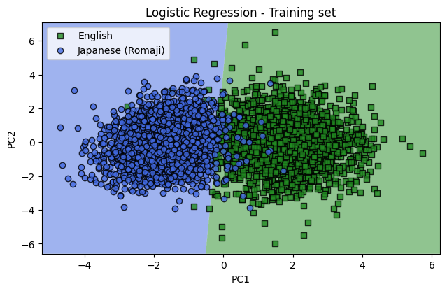

Summary
- Collected 200,000 English and Japanese sentences
- Performed principal component analysis based on letter frequency
- Trained a logistic regression model
- Obtained a classification accuracy of 97%
Background
As someone who has been learning Japanese for several years, I have developed an interest in linguistics and the differences between the two langugages. Japanese uses a character system that has three different scripts. These are hiragana, katakana, and kanji. English of course doesnt use any of these scipts but uses latin characters instead. If one were to classify English and Japanese sentences, it would be rather easy solely based on the characters, but it would also be less interesting. To better exemplify the differences in the languages, I wanted to convert both to the same character system. Luckily there is a standard format of converting Japanese to roman characters (romaji) called hepburn. This allows a rather direct mapping of Japanese sounds. This is because, both hiragana and katakana are phonetic, allowing direct conversion, and kanji can be converted to hiragana. Of course the other option would be to convert English words into hiragana or katakana, but due to the larger varity of phonemes in English, there would be a significant amount of loss. Therefore this project compares and classifies English and Japanese sentences where the Japanese sentences are written in romaji.
Data
Collection
To classify each language we need a large selection of Japanese and English sentences. One good source of example sentences well known among language learners is the website tatoeba. From tatoeba I have downloaded the entire selection of Japanese and English, which consist of 200,000+ and 1,500,000+ sentences respectively. The Japanese sentences are shown in the traditional script, so to convert to hepburn I used a python package called cutlet. One key difference between Japanese and English is the lack of spaces in Japanese. In English we can easily separate words by spaces, but in Japanese we need an additional tokenizer to separate the words. Cutlet uses MeCab and Unidict for tokenization of Japanese words.
Data Cleaning
Once both languages are in roman characters we need to further clean the data to be easier to process. These steps include:
- Changing all characters to lowercase
- Removing all punctuation from the sentences
- Reduce dataset to 100,000 sentences for each
Input Features
The classification is done solely by the frequency of letters in each sentence. The letter density was calculated for each letter, this is \(\frac{\text{Number of specific letter}}{\text{Number of total letters}}\). This results in 26 input features.
Preprocessing
The data first separated into a training set and a test set, with a 99:1 ratio. This leaves 2,000 sentences for testing after the model is built. The data is processed using principal component analysis. This is a feature extraction technique that allows the data to be transformed into its principal components. PCA works by calculating the covariance matrix for all of the input features, and calculating its eigenvectors. The eigenvectors are the principal components, of the directions with the largest variance in feature space. These directions are not specific features, but are a linear combination of all the features. The dataset is then transformed into this new basis system. For this project, I selected the first 2 principal components which are easily visable in 2 dimensions.
The images above represent the magnitude of the transformation weights in the first and second principal axes. These correlate to the amount of variance explainable by each letter in the principal axis. This is different than the classifying power of each letter because there correlations between each letter. We can then normalize these graphs by the principal axis's explainable variance. This shows us the amount of total variance explainable by each letter in the principal axis.
Model
Using the first 2 principal components, a logistic regression model was trained. Below we plot the 198,000 training sentences in the training set. The shaded regions in the background represent the classification regions for each language. There is 97.5% accuracy for the training data.
Lets run the test data and see how it performs. The test data also performs well with an accuracy of 97.1%. There is a difference of 0.38% between the training and test data. When comparing to the standard error of the classification prediction we can see that it is within 1 standard deviation. \[ err = \frac{\sqrt{57}}{2000} = 0.38\% \] Where 57 is the number of misclassified sentences and 2000 is the total sentences tested.